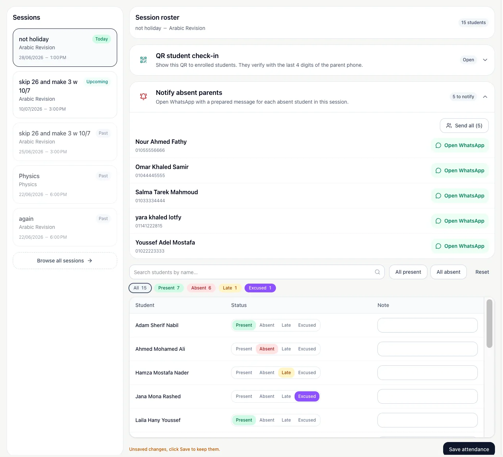
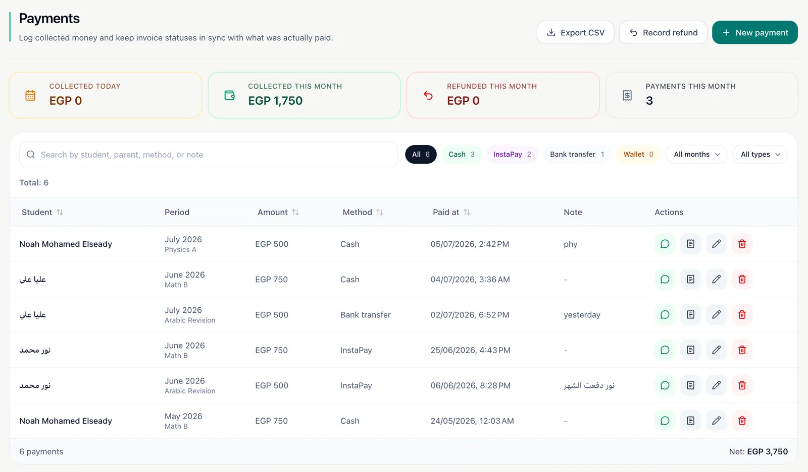
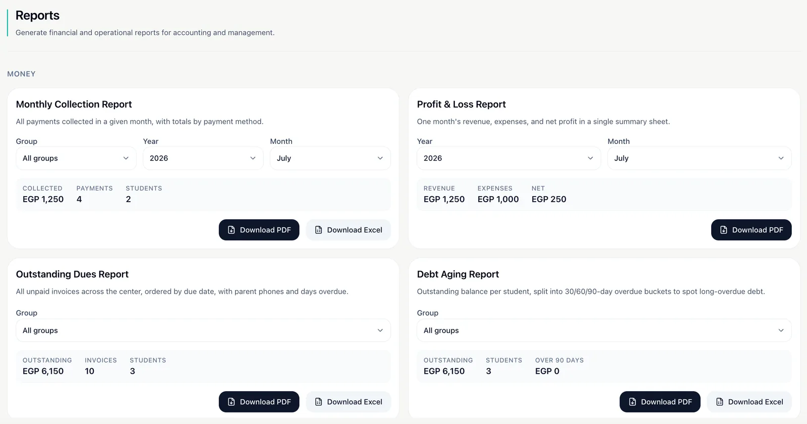

Class A — an edTech SaaS, from market research to production
Tutoring centres across Egypt run on WhatsApp groups, paper registers, and spreadsheets
that never reconcile. I interviewed the people living with that problem, found what every
existing tool was missing, and built the system that fixes it.
The dashboard answers the three questions an owner asks every morning: who is coming
today, who owes money, and what came in this month.
The problem
A mid-sized tutoring centre juggles a few hundred students across dozens of groups. Almost
none of that runs on software. Attendance is a paper register. Fees are a notebook or a
spreadsheet. Parent communication is a WhatsApp group where announcements scroll away
within hours.
The failure mode is always the same: money leaks. Nobody can say with confidence which
students owe what, how long they have owed it, or which groups are actually profitable. By
the time an owner notices, the debt is months old and awkward to chase.
Research before code
I did not start by writing software. I started by interviewing teachers and centre owners
about how their week actually runs — what they track, where the time goes, and which
mistakes cost them money. Then I worked through the tools already on the market feature by
feature.
Two things came out of that. First, the existing products covered the obvious surface:
students, groups, invoices. Second, they consistently stopped short at exactly the points
where the real work happens.
The gaps competitors left open
Attendance that costs time
Marking a register student by student does not scale to a room filling up in three
minutes. Nobody was solving the door, only the database.
Chasing money by hand
Tools recorded debt but left the follow-up entirely manual, which meant it did not
happen.
Parents left outside the system
Parents are the paying customer, yet had no way to see attendance or progress without
asking a teacher directly.
English-first interfaces
Products aimed at an Arabic-speaking market with RTL treated as an afterthought,
rather than as the primary experience.
What I built, and why
QR attendance, built for the doorway
Every student gets a QR code; a POS scanner at the door checks them in. The constraint
that shaped this was not technical — it was that a queue of teenagers will not wait for
an admin to scroll a list. Sessions generate automatically from each group's schedule,
so the register exists before anyone walks in.

Attendance resolves to a percentage per student, which is what parents actually ask
about.
Billing that chases itself
Invoices generate in bulk each month, carry discounts and payment status, and feed a
debt-aging view. The piece that changes behaviour is the automation on top: parents get
WhatsApp reminders for absences and unpaid invoices without an admin deciding to send
them. Recording debt is easy; collecting it is the product.

Payment status, discounts, and outstanding balances in one view.
A parent portal, not a parent broadcast
Parents get their own view: attendance history, progress over time, and assessments.
This was the clearest gap in the market and the one owners reacted to most strongly,
because it removes a whole category of interruption from their day.
Arabic first, not Arabic added
Full Arabic and English localisation with real RTL, plus multi-currency and
multi-timezone support. The product also installs as a PWA on iOS and Android, because
most of these centres are phone-first and were never going to sit at a desktop.

Reports export to PDF and Excel: collections, outstanding dues, per-group revenue,
absence trends, and debt aging.
Architecture and engineering
Class A is multi-tenant from the database up, with role-based permissions separating
admins, teachers, and parents, and audit logging over the actions that touch money. Every
tenant shares one deployment, so isolation had to be enforced at the data layer rather
than hoped for at the UI.
Application
Next.js and React with TypeScript end-to-end, React Query for server state,
react-hook-form and Zod for validated forms, Tailwind for styling.
Data
PostgreSQL via Supabase, with Knex.js for queries and migrations.
Localisation
next-intl driving Arabic and English, including RTL layout, currencies, and timezones.
Confidence
Playwright smoke tests over the critical paths, Sentry for error monitoring in
production.
Where it stands
Class A is live and serving paying centres. It went from an idea to a production platform
— product strategy, design, branding, and full-stack engineering — carried by one person.
The part I would carry into any team is the sequence: talk to the people with the problem,
map what existing tools refuse to do, and build for the constraint rather than the feature
list. The QR scanner exists because of a queue at a door, not because it looked good on a
roadmap.
He is the mastermind behind Class A, conceiving the idea and executing it flawlessly
from scratch… He built a system that not only includes all top-tier market features but
also addresses existing gaps by introducing missing functionalities that none of the
competitors offered.